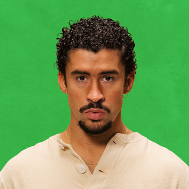
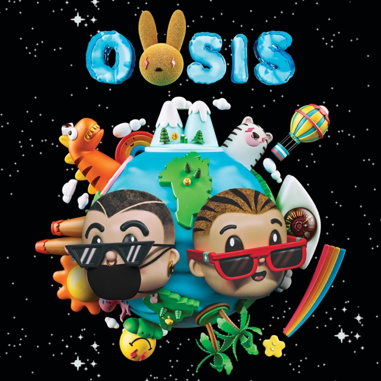
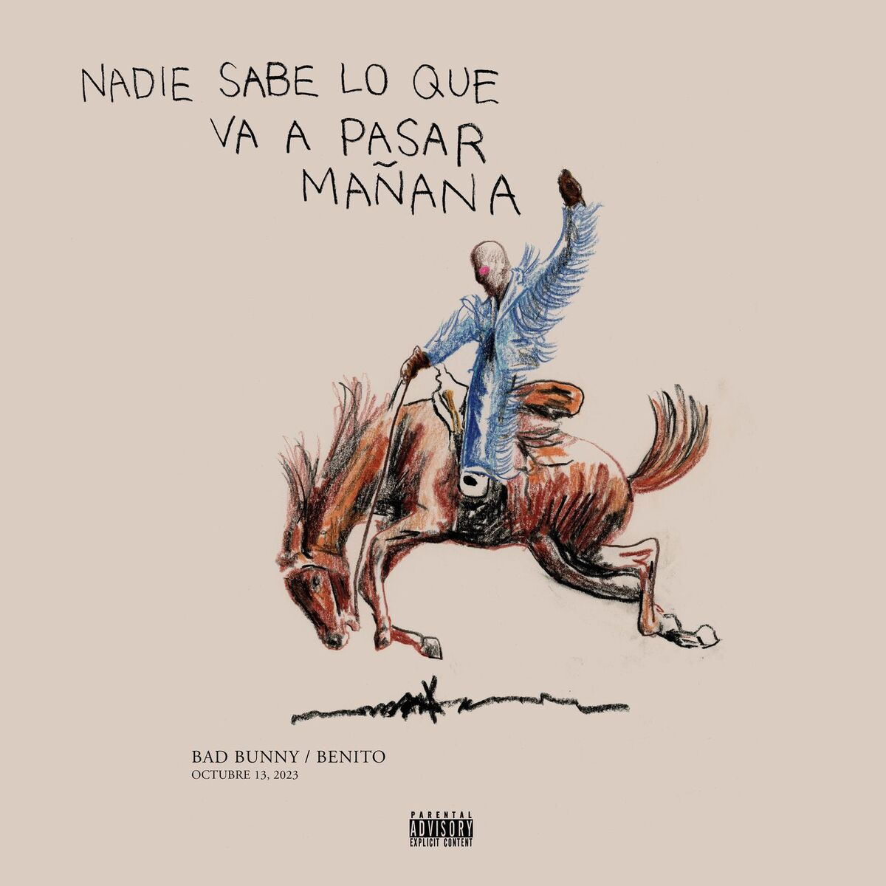

Blog Bad Bunny
BIOGRAFÍA
Benito Antonio Martinez Ocasio, mejor conocido como "Bad Bunny" nace el 10 de marzo de 1994 en Bayamón, Puerto Rico, para después ser criado en el barrio Almirante Sur en Vega Baja.
Benito creció en un hogar de clase media baja en Vega Baja, hijo de un conductor de camiones, Benito Martínez, y una maestra de inglés, Lysaurie Ocasio. Tiene dos hermanos menores, Bernie y Bysael Martínez. Desde muy pequeño mostró un gran interés por la música. A los 5 años, cantaba en el coro de la iglesia católica local, donde permaneció hasta los 13. Su primer gran contacto con la música urbana fue al recibir un álbum de Vico C como regalo de Navidad. Creció escuchando una mezcla de salsa, merengue, baladas y reggaeton de artistas como Daddy Yankee y Héctor Lavoe, lo que más tarde influiría en su sonido y forma de hacer música.
INICIOS DE SU CARRERA
Mientras estudiaba y trabajaba como empaquetador en un supermercado Econo, Benito comenzó a crear su propia música y a publicarla de forma independiente en la plataforma SoundCloud alrededor de 2013 . Su gran oportunidad llegó en 2016 cuando su canción "Diles" llamó la atención del productor DJ Luian, quien lo fichó para su sello Hear This Music, discográfica que acobijaba a gigantes de la época como Arcángel, Anuel AA, De la Ghetto y Ozuna . Poco después, lanzó "Soy Peor" en 2016, un tema que lo posicionó como un pionero de la nueva escena del trap latino y le dio un reconocimiento masivo .
Bad Bunny 2016
ÁLBUMES
x100pre (2018)
 x100pre
x100pre
Canción #1 del álbum: Mía (con Drake)
Oasis (2019)
 OasisCanción #1 del álbum: La Canción (con J Balvin)
Yo Hago Lo Que Me Da La Gana (2020)
 yhlqmdlg
yhlqmdlg
Canción #1 del álbum:
Safaera (Con Jowell & Randy)
El Último Tour del Mundo (2020)
 El Último Tour del Mundo
El Último Tour del Mundo
Canción #1 del álbum: DÁKITI (Con Jhay Cortez)
Las Que No Iban a Salir (2020)
 Las Que No Iban a Salir
Las Que No Iban a Salir
Canción #1 del álbum:
Cómo Se Siente Remix (Con Jhay Cortez)
Un Verano Sin Tí (2022)
 Un Verano Sin Tí
Un Verano Sin Tí
Canción #1 del álbum:
Me Porto Bonito (Con Chencho Corleone)
Nadie Sabe Lo Que Va a Pasar Mañana (2023)
 Nadie Sabe Lo Que Va a Pasar MañanaCanción #1 del álbum: Monaco
DeBÍ TiRAR MáS FOToS (2025)
 DeBÍ TiRAR MáS FOToS
DeBÍ TiRAR MáS FOToS
Canción #1 del álbum: BAILE INoLVIDABLE